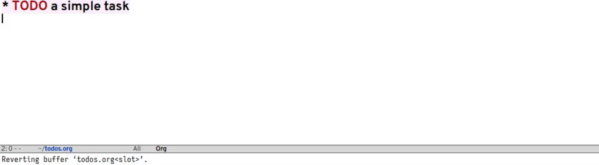

As I’ve said before, basically my entire digital life happens in either Emacs or XMonad. Thus, a lot of time spent on my setup either goes towards working on the two configurations separately, or—as we’ll do today—bringing them ever closed together.
Specifically, I want to showcase a newIn version 0.17.0, though new features are coming for 0.17.1,
which will drop soon!
XMonad module:
XMonad.Prompt.OrgMode. Building on top of XMonad’s prompt—which works
much like dmenu—it is designed to rapidly capture thoughts and ideas
whenever inspiration strikes and, importantly, to do so without
disrupting one’s current workflow. The module recently got support for
Org priorities, so I figured this was as good an excuse as
any to talk about it.
Motivation¶
One theme in the post about my research workflow was how it’s possible
to use org-mode (with all of its appendages, like org-roam) to
organise one’s thoughts. XMonad.Prompt.OrgMode was created as yet
another link in that chain. Unlike when writing tiny Emacs Lisp
scripts in XMonad, this does not involve any
custom elisp code one has to run; all of it is taken care of by the
module itself.
The upshot of all of this is a tool to quickly and unobtrusively jot down an idea—quiet the monkey mind—and then get back to work straight away. For me, having something like this is very important, lest I get distracted by some thought about another project and spend the next hour or so working on that instead of doing what I was actually supposed to do. Having the idea written down in a known place—perhaps even with an automatic reminder in my agenda—helps me get rid of that creeping anxiety that I’m forgetting things left and right.
Functionality¶
The following showcases the core functionality of the module—taking notes!

In case you really don’t want to forget something, there is also the
ability to create DEADLINE and SCHEDULED tasks. Optionally, you can
also specify a priority, depending on the importance of the note. If
you add the org file in which the TODOs are placed to the
org-agenda-files variable, then this will immediately show these tasks
in your agenda!

How exactly one may specify the SCHEDULED and DEADLINE keywords, as
well as a date, time, and priority is covered in detail in the
documentation for X.P.OrgMode.
Last but not least, it’s possible to capture the current (primary)
selection and, depending on the type of thing in it, use that as either
the body or the header of the task. If it’s a URL, create a link (i.e.,
it will be of the form [[link][input-text]]); if not, just add the
selection to the body of the note.

Of course, you can use all of this together as well—directly link to that one paper or blog post you wanted to read, or that one YouTube video you want to watch on the weekend!
Sample Configuration¶
To round things off—and quickly showcase another cool (and new!)
module, XMonad.Actions.Prefix—here is a sample keybinding that takes
“normal” TODO notes on M-o cNote that for this post, M means <Super_L> and not <Alt_L>.
and uses the selection when called
with a universal argument:
-- uses {-# LANGUAGE LambdaCase #-}
orgKey :: (String, X ())
orgKey =
("M-o c", withPrefixArgument $ (`uncurry` orgSettings) . \case
Raw _ -> orgPromptPrimary promptNoHist
_ -> orgPrompt promptNoHist)
where
orgSettings = ("TODO", "~/todos.org")
I’ve found M-u to be quite convenient for XMonad’s universal argument
key, mirroring the C-u convention from Emacs. In either case, simply
add the usePrefixArgument combinator somewhere to your main function
and give it your preferred keybinding. For example:
main :: IO ()
main = xmonad
. usePrefixArgument "M-u"
$ def{ modMask = mod4Mask -- use <Super> as mod
}
If you’re anything like me, this will soon become an integral part of your workflow and you won’t want to live without it. If not, then perhaps you still don’t understand what all the fuss is about; in either case, I’d like to hear from you!